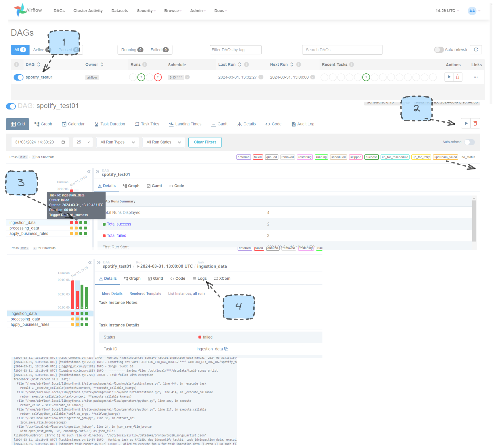

v0
Ref:
Link airflow-docs
Link docker-docs
My own Docker-studies repo
Friend repo's refence for starting out (bAlemar Bernardo Alemar)
youtube airflow ref video
dev good habits ref video (luhborba Luciano Borba)
youtube airflow ref video (pass data betweenn tasks)
First steps to start the airflow_extended image and some DAG examples.
Here, our goal will be to make some easy DAGs to get started. One thing that's different from other first-step guides is that this version (v0) starts with the use of imported functions from DAG 0 and beyond.
Also, it's important to mention that because this approach will be using my own functions, it will utilize only PythonOperator.
- The first thing after installing all the requirements is to create the Dockerfile and docker-compose.yaml files.
[!Note] The project's organization will affect the interaction between these two files.
Important points to be awere here:
In docker-compose.file:
(1) Look for the image part of the aiflow: image: ${AIRFLOW_IMAGE_NAME:-{image name}:{image tag}}
e.g.: image: ${AIRFLOW_IMAGE_NAME:-extening_v0_airflow_image:1.0.0}
this image name and image tag wil be used in the docker build command.
(2) in volumes add your src folder, to get autoreload of your modules.
volumes:
....
....
....
- ./src:/usr/local/airflow/src # (!!!!)
(3) [Optional] here turn off the tons of example dags that floods our vision.
AIRFLOW__CORE__LOAD_EXAMPLES: 'false
Intructions to build and run the airflow-docker image:
(1) Build the Dockerfile (extended image):
docker build . --tag {image name}:{image tag} SAME AS IN docker-compose.file
(2) Giving linux some variables definitions:
echo -e "AIRFLOW_UID=$(id -u)\nAIRFLOW_GID=0" > .env
(3) Run the docker-compose first start for airflow
docker-compose up airflow-init
Here dont worry, after this its done problably you will see your airflow-container going down by him self.
airflow-init_1 |airflow already exist in the db
airflow-init_1 | 2.8.2
v0_airflow-init_1 exited with code 0
Don't worry, these are normal checks to see if the database is already created.
(4) Normal docker-compose up to start the airflow and start the game
docker-compose up
Airflow-web: http://localhost:8080/
- username: airflow
- password: airflow
If you're not familiar with the Airflow UI, I strongly recommend taking some more introductory courses. However, I will mainly focus on the DAGs, specifically how to manually trigger them and examine the logs of the runs.
But here its a visual example of how to navigate the UI.

DAGS:
First dag: dag_import_test.py
This dag its just a test to see if we can import modules from other files. it uses two functions.
Source code in v0/src/resources/test_module.py
4 5 6 7 | |
Source code in v0/src/resources/test_module.py
10 11 12 13 | |
(Just two functions that basically print a library.)
Second dag: dag_refresh_test.py
This dag its just a test to see if the modules can be update without the need to restart the container.
Third: dag_spotify_test.py
This dag its a short adapitation of one docker studie that i done, my goal was to test out the extraction and process functions in airflow.
Source code in v0/src/main.py
9 10 11 12 13 14 15 16 17 18 19 | |
Notice that in the Airflow context, obtaining the return of a different task has its own mechanism.
Source code in v0/src/main.py
22 23 24 25 26 27 28 | |
so basically its a excract, load and print dag for testing airflow+docker working togetter.
LIST OF OTHERS USEFUL DOCKER-COMMANDS HERE:
docker-compose down
docker ps
docker ps -a
docker images
docker image rm {image.name (or id)}:{image.tag} # Correct way to erase your images
docker rmi $(docker images -q) # ERASES ALL THE IMAGES !!! NOT RECOMMENDED TO USE NEAR PROD SYSTEMS
docker volume ls
docker volume rm {volume.name}
🍀 TIP: # use autocomplete tab(botton of your keyboard) to names or ids